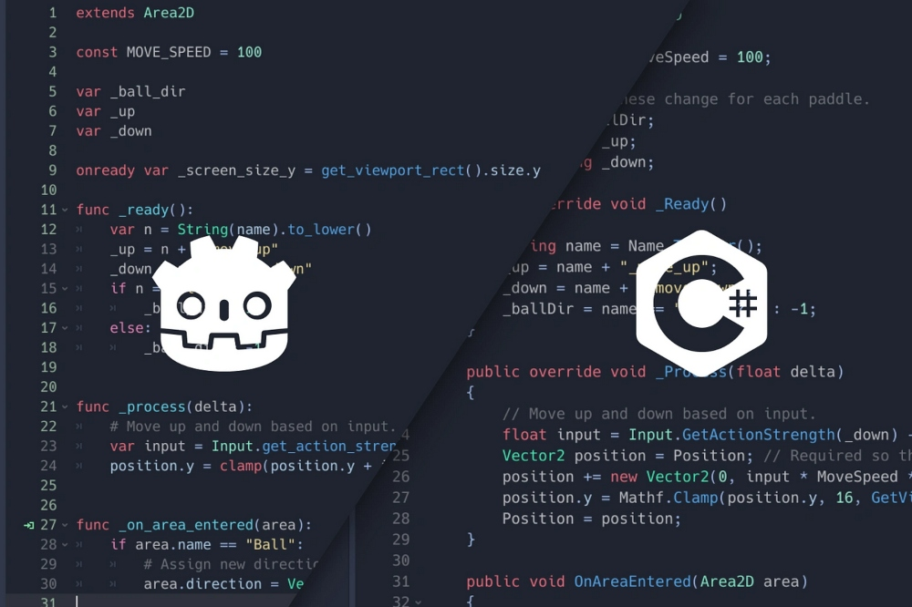
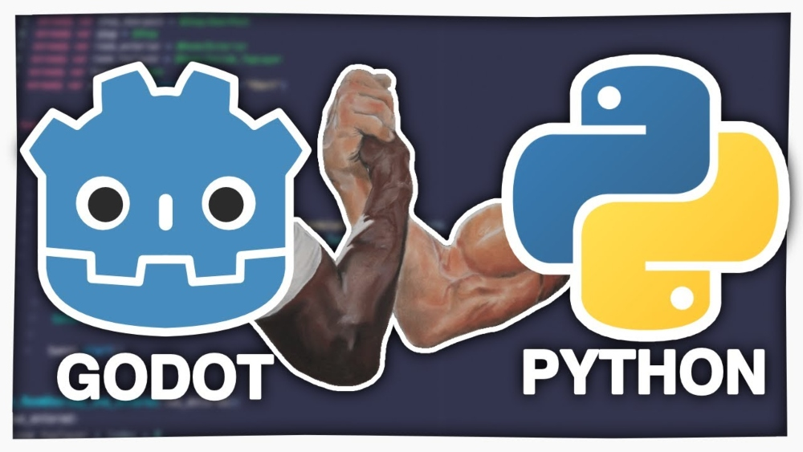
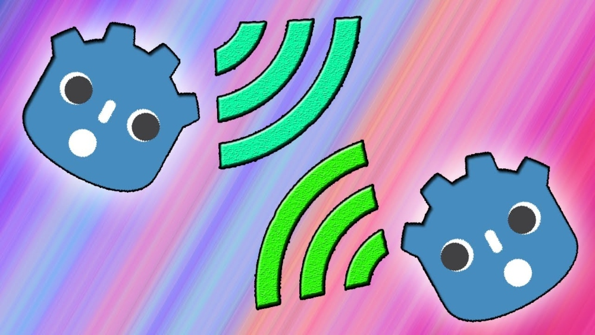
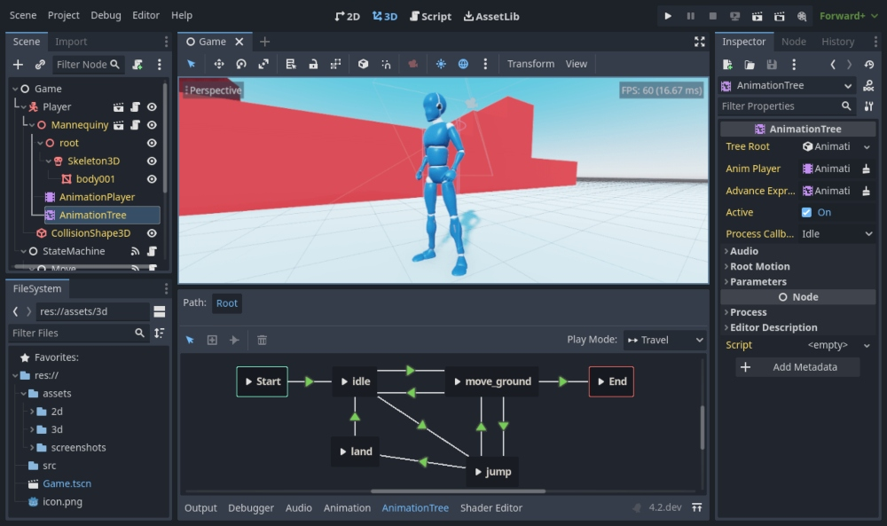

The first step in every Game Dev's career is to stalk their favourite company's web page searching for an entry-level position with 0 years of experience needed. Then, after realizing that they actually have to do something in order to work in the industry, the real first step is to choose a Game Engine to spend whole afternoons working with and crying over it. Whether they already have programming skills or they have to start from the beginning, choosing a Game Engine is a big task for a Game Dev. People have many reasons for choosing one over others, like having experience with the programming language, a friend or influencer recommending it or because their favourite game was made with it. In this post, I'm going to get through the reasons why I chose Godot for my personal projects.
Cross-Language Scripting
The first thing that caught my attention about Godot is how cross-language friendly it is. By doing some black magic, you can essentially do that in every Game Engine, but the fact that Godot actually promotes it peaked my curiosity. Thanks to my Computer Science degree, I can work with every language that Godot officially supports and interchange them as convenient.
I want to work with a high-level programming language for most of my scripts to agilize the process and improve the readability, while also having the option of changing to a lower-level language to implement some resource-heavy algorithm or subroutine. I know I won't be making any of that in the near future, but knowing that I can gives me the freedom and confidance I need to embark on new projects.
GDScript
Talking about programming languages, I have to say that I have completely fallen in love with GDScript. My go-to programming language for almost any kind of project has always been Python due to its simplicity. GDScript has a lot of similarities with Python, such as the dynamic typing, use of indentations and general philosophy; while being influenced by other languages such as C# in things like its use of decorators and Object-Oriented programming.
In my full-time job I mostly use C# so I am used to it, and I have studied and utilized the advantages of C++. But I will keep using GDScript for now because by the time I write all the necessary keywords, parenthesis and brackets to declare a simple array in C#, in GDScript I've already made a for loop that iterates over that array to apply an algorithm to every element in a legible way.
Signals
When I first learnt about signals, I thought that it was going to be the hardest thing to learn; but after using them, now I want every programming language to have something like it due to how organic it feels to use. Following a Publisher-Subscriber pattern, connecting and emiting signals makes so much sense. When an event happens, you simply emit the signal and every node connected to it reacts accordingly.
I can see signals becoming really messy in medium to large projects because you have to remember which signals you have connected via code or the UI as well as to which methods are connected to, but it probably becomes a lot easier to maintain if you keep record in a diagram. Remember to use diagrams alongside the documentation to improve the readability, folks.
UI and IDE
Godot is actually not my first Game Engine, it was Unity. I had been using it for some years from time to time, and I actually did a project for college using it. But due to Unity's fiasco with its terms and conditions last year plus some issues I had working with it, I wanted to migrate to other Game Engine for my professional career. However, one thing that I liked about Unity was its UI, and Godot's is almost identical, if not better in some ways. Being able to seamlessly change between nodes and modifying their attributes is something I appreciate.
Plus, I really like that the IDE is integrated withing Godot's UI. I despise Visual Studio which was the default option for Unity, and while I like working in VS Code and appreciate how customizable it is, I prefer the simplicity of having the IDE inside the UI. No reloads needed, no waiting for the application to open, no need to install additioanl plugins... But by far the best thing about it is how seamless debugging is. You simply put the breakpoint in the code and start the game. That's it.
Honorable Mentions
- TileMaps and Terrains. I really like how they are implemented and, even though creating a Terrain can be cumbersome, it is worth the efforts to use them.
- is_on_floor() actually works. I've always despised Unity for not having a simple way of implementing such a simple thing like checking if your character is grounded. Instead of using RayCasts and messing up the implementation, in Godot I can simply use is_on_floor inside an if statement and forget about it.
- Easy to use decorators. I have already said before that I appreciate GDScript's simplicity, but I really noticed it by using the @ decorators, such as export or onready. It feels easier from having to type [SerializedField] in Unity.
- Good ethics. Unity's fiasco with its terms and conditions where the last straw to abandon it, and seeing Godot's company having good work ethics and seemingly caring about indie game devs is reassuring, at least for now.
- Games in the market. There have already been released some games with commercial success made in Godot like Cassette Beasts or Brotato, so knowing that it is possible to create a medium project with Godot is a nice thing to know.
- My colleagues at Atomic Ferry also like it. I proposed learning Godot to Atomic Ferry even though a couple of us had already used Unity, and after a month of learning, all of them liked it and wanted to work with it. It is important to have a Game Engine that the entire team likes to use.
Conclusions
Godot is still a relatively new Game Engine, but it has already formed a big enough following of people using it that it doesn't feel that way. With the amount of resources available online, new and old indie devs developing games with Godot and overall simplicity, me and the rest of my colleagues will be using Godot for a good while.